Penn 720 Service Guide
Overview
The Penn 720 is a light to medium duty open-face full-bail spinning reel, part of Penn's 700 Spinfisher series, which ranged from the smallest--the 720, mostly intended for freshwater fishing--to the largest, the mighty 704, designed for heavy saltwater duty. The line capacities, materials, and overall heft of the reels in the 700 series varied widely.
The 720 was introduced in 1968 and Penn ended production in 1978. These early 700-series reels were finished in either blue or green (affectionately known as "greenies"). Which color was used on which model seems to have been a bit random in earlier years of production, but later appears to have become more consistent--the models with bushings (720, 710, 712, and 704) were blue, and the models with bearings (722, 711, 713, and 705) were green--but in any case it doesn't seem to be a reliable way to date individual reels.
In 1978 the model number was changed to 720Z with the introduction of the Z-series of reels, and this reel stayed in production until 1995. Like the earlier Spinfisher series, the Z-series included a range of models for different field conditions, and updated the original 700-series with a black finish, stainless steel components, and a few internal refinements, but kept the same basic design and gear ratios.
Some later versions added sealed drag knobs and upgraded the line rollers and bearings, especially the 704Z and 706Zs, which were intended for use in harsh surf-fishing conditions.
The 720's housing and rotor cup are made of steel, as is the main gear; the rest of the gears are mostly brass. The crosswind block and drag cap are made of white plastic. The spool is made of aluminum.
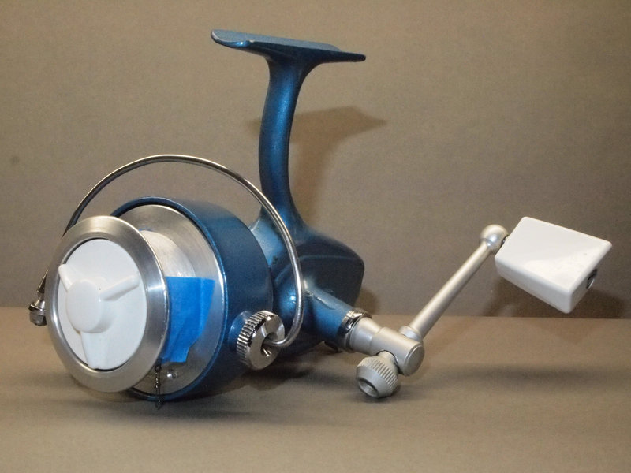
The following video provides a brief overview of the Penn 720.
If the embedded video doesn't work you can Watch the Penn 720 overview on YouTube. If the videos are not working, you can try changing your browser security settings and/or your VPN settings, if you use a VPN.
The following videos provide a full walkthrough of servicing a Penn 720. Use the step‑by‑step photos and instructions that follow the videos while you work.
Service--Part 1 of 3: Disassembling the Housing
Service--Part 2 of 3: Disassembling the Gears
Service--Part 3 of 3: Reassembly and Testing
Cleaning and Lubrication for Vintage Reels
These reels are very simple, strong, dependable designs, and many are still in use today. This guide shows you how to disassemble, clean, lubricate, and reassemble the Penn 720 Spinfisher. For more complete background on the very wide range of reels in the Spinfisher series, see Penn's 700 Spinfisher series.
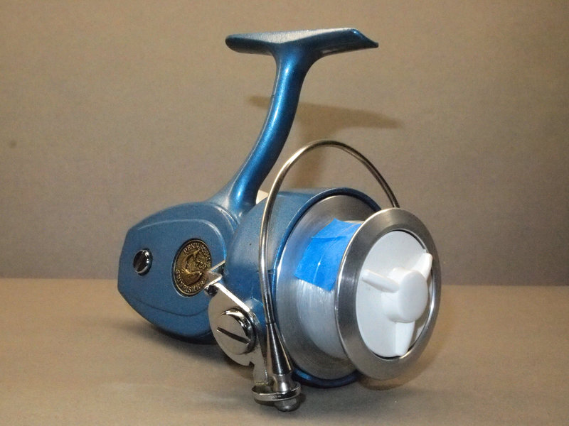
Similar Models: The Penn 722 (not pictured) is basically the same reel with a few minor upgrades, the most important mechanical difference being that the 722 uses a ball bearing on the main shaft --the 720 uses a brass bushing. The practical implication is that the 722 has a bit smoother cranking action. In terms of appearance, the 722 is finished in light green (known to enthusiasts as a "greenie")-- the 720 is finished in a light metallic blue.
Otherwise the reels are mechanically almost identical, and the practical implication of this is that most parts are interchangeable. If you need a replacement part for a 720, then you could locate and use either a 720 or a 722 for most internal parts. You could even mix and match exterior parts like the housing, housing plate, and rotor cup.
The small strips of painter's tape holding the line in place on the spool maintain tension on the spooled line when the reel is not in use. Painter's tape has many qualities that are useful for work on vintage reels--it sticks well to metal and plastic surfaces and yet is easily removed, and it does not leave sticky residue. It is also available in many widths for different applications.
The Badge: This varies depending on the year of production. The example reel here has the earlier badge design. Later reels changed to a more text-oriented design. This also shows the remarkable condition of the original light blue metallic finish, which (in 2026) is around 75 years old!
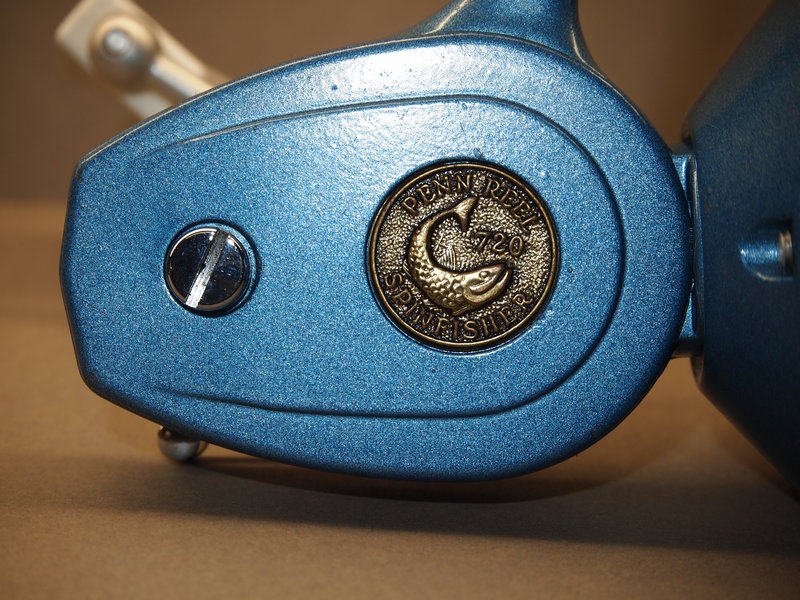
Features and Controls: The 720 is a very simple design with a few interesting exterior features.
The white plastic drag cap on the front of the spool is simply twisted to apply more drag or to back off the drag.
The eccentric lever has two positions; in one the anti-reverse and clicker are engaged, in the other the retrieve is silent. In this location, directly below the handle, it is easily engaged when a fish strikes to prevent the handle from revolving backwards.
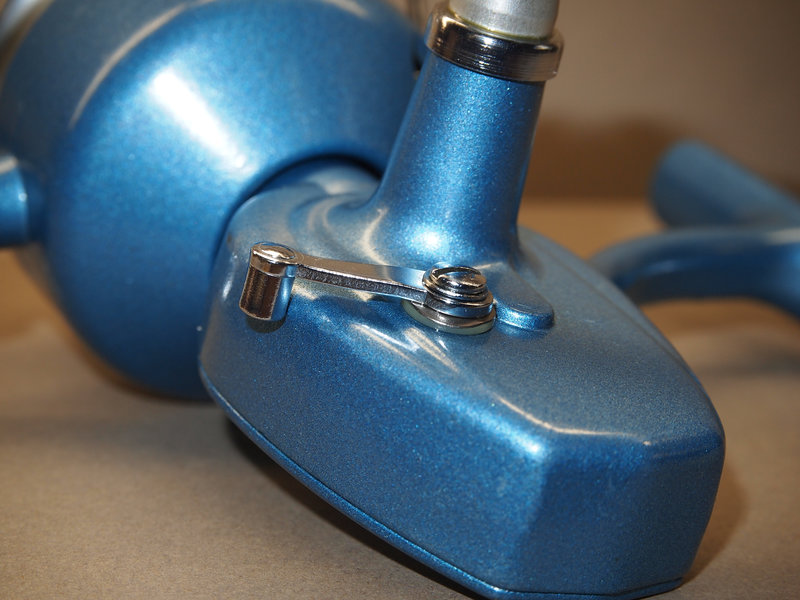
The handle can be rotated for storage by loosening the nut at the base.
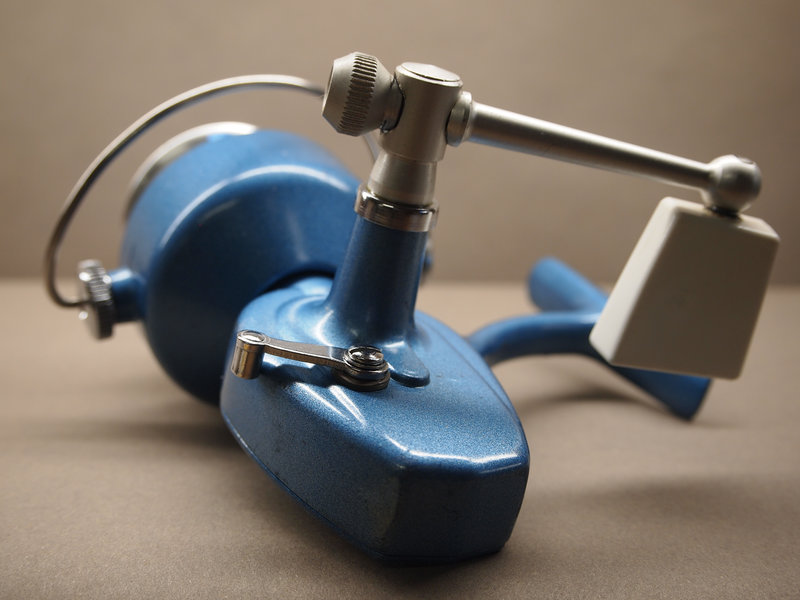
Specifications
Technical documents: Schematics and other useful information on servicing and using this reel are included in the Penn Reels Instruction Manual.
Weight: 9 1/2 oz.
Gear ratio: 4:1
Line Capacity
| Line lb. test | yds. |
|---|---|
| 4 | 300 |
| 6 | 200 |
| 8 | 150 |
| 10 | 125 |
| 12 | 100 |
Balanced Tackle Outfits
These specifications are for both the Penn 720 and 722.
| Rod | Line lb. test | Lures oz. |
|---|---|---|
| 5'6" light action | 2--6 | 1/8--1/2 |
| 6' light action | 4--8 | 1/4--1/2 |
| 6'6" light action | 4--8 | 1/4--1/2 |
| 7' light action | 4--10 | 1/--1/2 |
Typical issues: For example, clicker/anti-reverse not working.
Difficulty and Time for This Procedure: The Penn 720 is probably one of the simplest open-face spinning reels to service, so it is a good choice for a first project--but don't let this make it seem insignificant--it does require some dexterity and patience, and acquiring a "feel" for working on vintage reels, and at the same time it helps you build those very skills.
If you already have your workspace set up and your tools and materials on hand, the evaluation and servicing might take around 3 hours, assuming you are a beginner and are proceeding at a leisurely pace (a good idea when first starting; don't be in a hurry). More experience will result in a considerably shorter timeframe.
Before You Begin
Complete an initial evaluation of the reel. All vintage reels should be evaluated and tested before starting any work on them to provide a baseline for later comparison.
If you just acquired the reel, remove the line from the spool. There is no way to determine the age or condition of the line on a newly acquired vintage reel, so it makes sense to start with new line as the final part of servicing a reel. This also allows you to inspect the arbor to determine what type of material it is made of (this will help date the reel) and clean it along with the rest of the parts.
Disassembly and Servicing
Since not all parts of a reel may need the same level of attention, the disassembly and servicing for the 720 is divided into the following sections:
Housing and Gears: On most reels this is a good place to start.
Rotor Cup and Bail: Since spinning reel bails are spring-loaded, they can be a bit more difficult to reassemble than the housing and gears. If the bail seems to work properly--it flips into the casting position easily, then springs back readily when retrieve is started--it may be best to simply use some reel oil to lubricate both points where the bail pivots on the rotor cup and the line roller and stop there.
Drag: The drag mechanism on the 720 consists of a stack of washers in the spool, held in place by a retaining ring; like the bail, this may be a bit more challenging to remove and re-assemble, so it may be best to simply leave the drag alone if it appears to be working correctly.
A good plan for the beginning vintage reel enthusiast could be to service the housing and gears, use the reel for a bit, then perform a second round of servicing for the bail and drag assemblies.
The following video provides a very quick overview of the servicing procedures.
If the embedded video doesn't work you can Watch the Penn 720 overview on YouTube. If the videos are not working, you can try changing your browser security settings and/or your VPN settings, if you use a VPN.
Disassembling the Housing
Video: 01:25 Disassembling the housing
- Remove the drag cap by turning it clockwise.
Video: 01:34 Removing the drag cap, spool, and handle
All directions assume you are looking at the front of the reel, with the reel upright--foot up--as it would be mounted on a rod.


This is a good time to inspect the plastic for cracks. That this example reel's drag cap has several minor cracks, which were [repaired with epoxy](docs/epoxy-repairs.md).
**Variations:** On this example 720 cap the plastic completely surrounds the brass inner cap; the design varied with different manufacture years, so that on some caps more of the brass inner cap is exposed--these all appear to be interchangeable. The drag cap is a part that is subject to wear. Some damage can be repaired; in other cases it may be necessary to locate a parts reel, and since these reels are relatively common it is also possible to find just the drag caps, used as well as newly manufactured. eBay is generally a good starting point for most parts.

-
Remove the spool by pulling straight out.
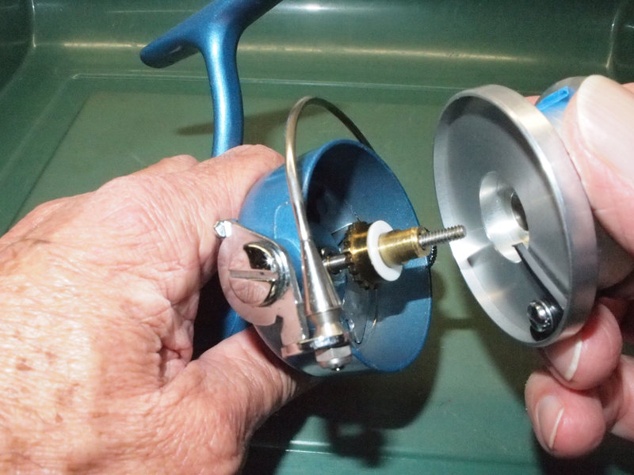
This is a good time to inspect the drag and click mechanism on the inside of the spool. If it is possible to obtain one or two extra spools, for example, by purchasing parts reels, those will prove useful for keeping several pound-tests of line handy for quick changes in the field. Another option to consider with the 720 and the other Penn Spinfishers would be to obtain the sister model reel (in this case, the 722)--this would provide you with two spools which could be shared between the reels and the slightly different experience of the bearing-equipped reel versus the bushing- equipped 720.
-
Remove the handle by turning it clockwise (with the handle side of the reel facing you)--opposite to the direction you turn it to reel in line.
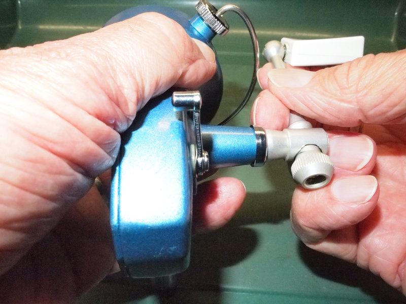
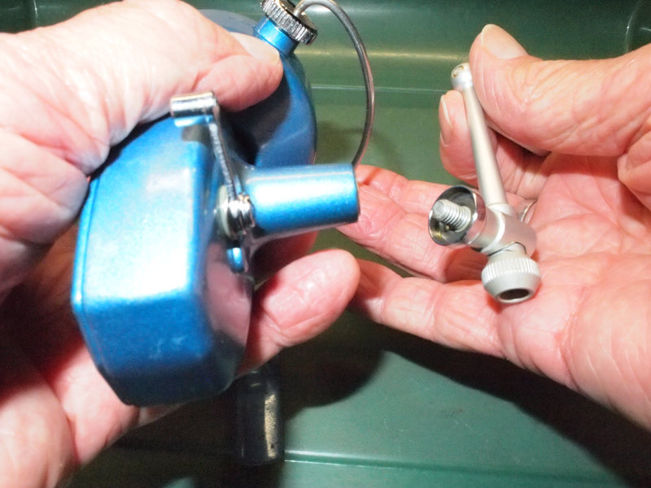
-
Remove the single screw that secures the housing plate.
Video: 02:11 Removing the housing plate

A short-handled screwdriver is useful for working on large screws like this one.
-
Pry the housing plate from the main housing.
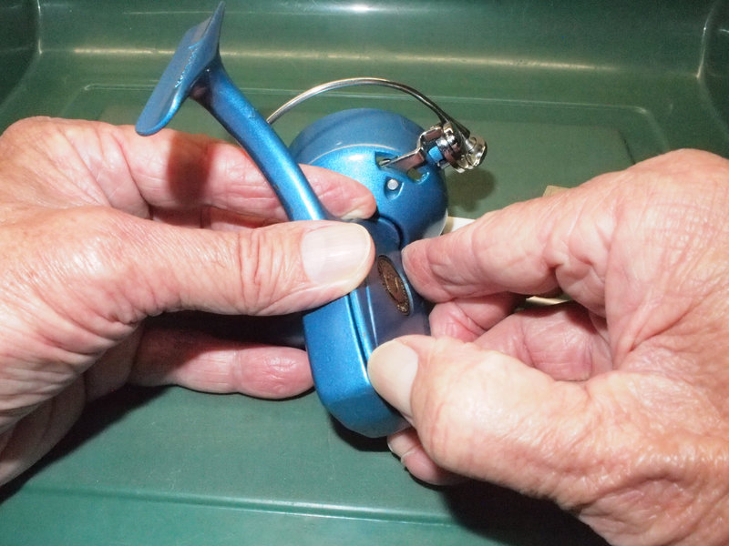
On some reels the plate may be stuck in place. Do not attempt to pry these apart with a screwdriver, which is likely to slip and damage the finish. Use your thumbnail or a thin blade and work it carefully under into the gap between the two parts; eventually it should pop off.
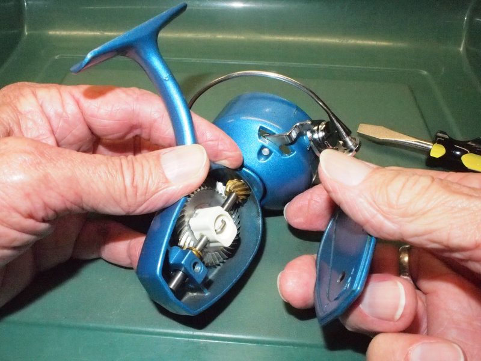
You can now see the main gear and associated parts. This is a good time to inspect the overall condition of the gears, the accumulation of old lubricants, etc.
This example reel has already been disassembled, serviced, and reassembled, so the gears are very clean. The same reel before servicing shows accumulated old grease, which hardens and can impair function. It is not possible to know what sorts of lubricants have been applied over a particular reel's lifetime, so it is best to clean all the parts and start fresh with the correct lubricants.
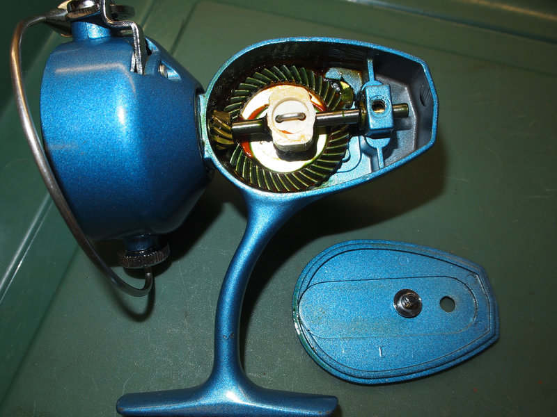
-
Remove the crosswind connector.
Video: 02:47 Removing the crosswind block and spool shaft

Use a pair of needle-nose pliers to pull the connector straight out.
-
Remove the spool shaft.
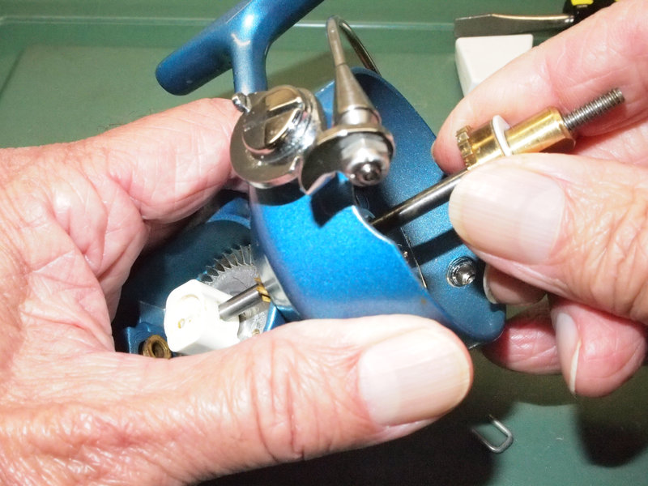
Pull the spool shaft out through the front of the rotor cup.
-
Remove the crosswind block.
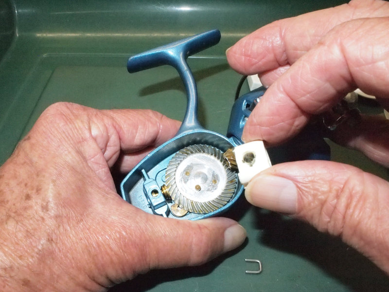
-
Remove the rotor cup.
Video: 03:22 Removing the rotor cup

Use a 3/8" socket wrench. Hold the rotor cup while turning the wrench.

Disassembling the Gears, Cleaning, and Lubricating
-
Remove the pinion gear screw.
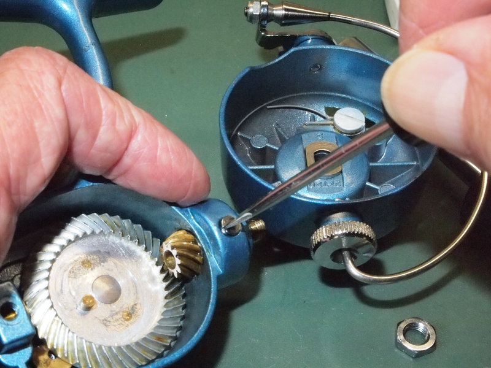
Optionally you can just loosen the screw enough to remove the pinion gear.
-
Remove the pinion gear.
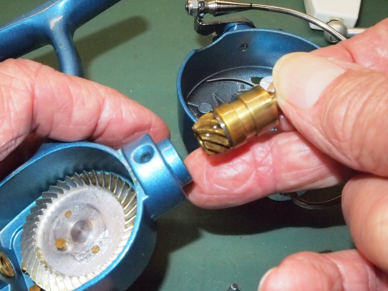
Pull the pinion gear straight out. You may need to rotate the pinion and/or the main gear slightly to disengage the teeth.
-
Remove the main gear.
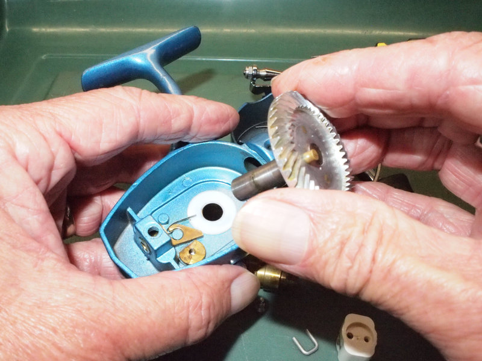
-
Remove the spool shaft sleeve.
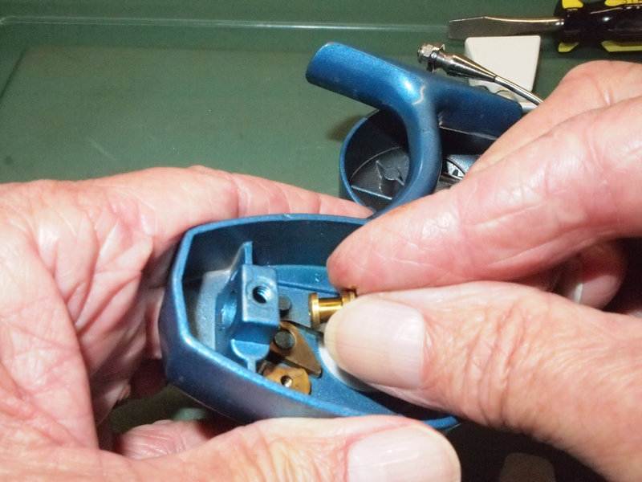
The spool shaft sleeve is a short brass sleeve that the back end of the spool shaft fits into. Note that the front end of the sleeve has a slightly larger diameter flange than the back end--when re-assembling, remember that the smaller end goes first into the block at the back of the housing.
-
Remove the dog and dog spring. Note! Before removing note the orientation of the dog/dog spring relative to the eccentric (the small brass semi-circle next to the dog)--this must be re-installed correctly for the anti-reverse to work correctly. It's a good idea to take a picture of it before removing.
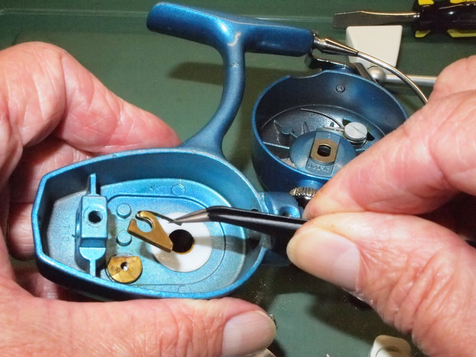
Grasp the dog spring with a pair of tweezers and pull straight out. The spring is held in the circular opening in the dog by spring tension but is not attached--be careful not to lose these small parts.
-
Remove the thrust washer.
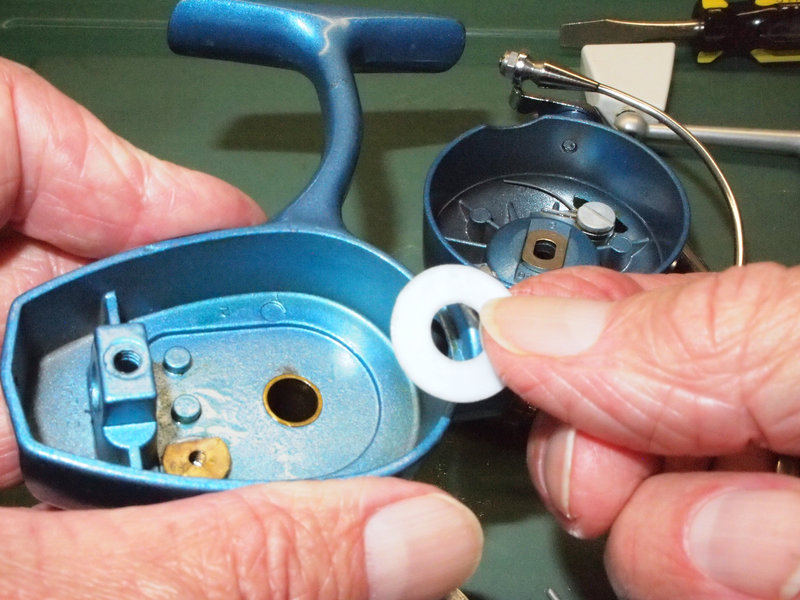
-
Clean the gears and inside of housing.
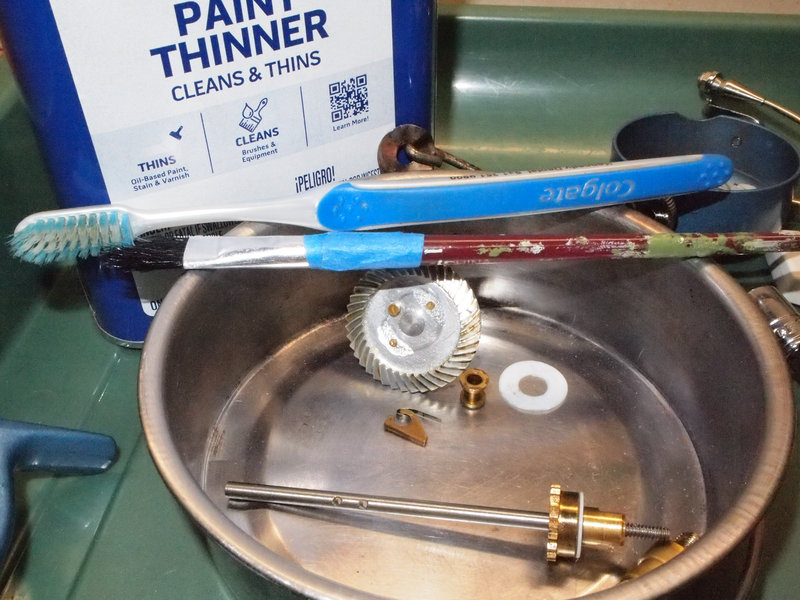
-
Grease the gears and the main gear and spool shafts.
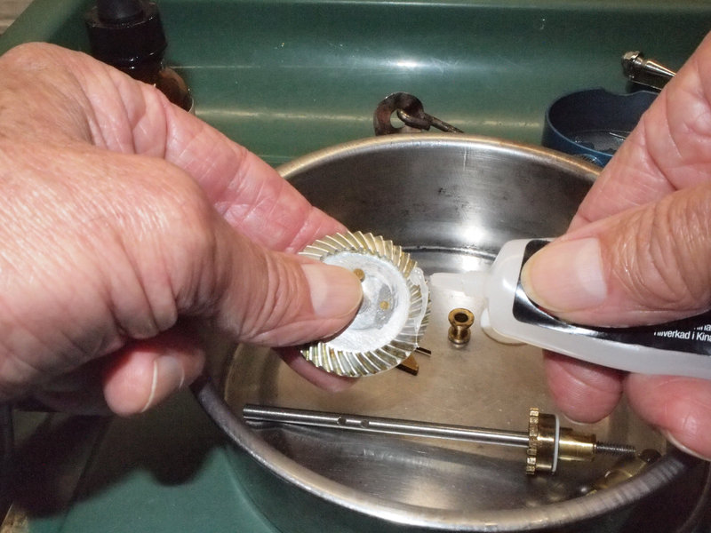
See the [Basic Cleaning and Lubricating Procedures](cleaning-lubricating.md
You are now ready to re-assemble the gears and housing.
Re-Assembling the Housing and Gears
To re-assemble the reel you basically just perform the disassembly steps in reverse order. There are, however, a couple of additional details to note that will make re-assembly go more smoothly.
When replacing the crosswind block:
-
There is a small nib on the face of the main gear--the slot on the bottom of the crosswind block fits over that nib. First rotate the gear to position the nib towards the front of the housing, then set the crosswind block on top of it with the nib fitted into the slot.
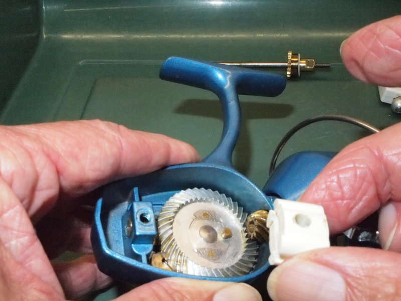
-
There are two holes in the spool shaft--the crosswind connector fits into those holes after passing through the matching set of holes in the crosswind block. To align these holes correctly, first insert the spool shaft and position it so that the holes are facing up and are next to the crosswind block. See the pencil point in the following image.
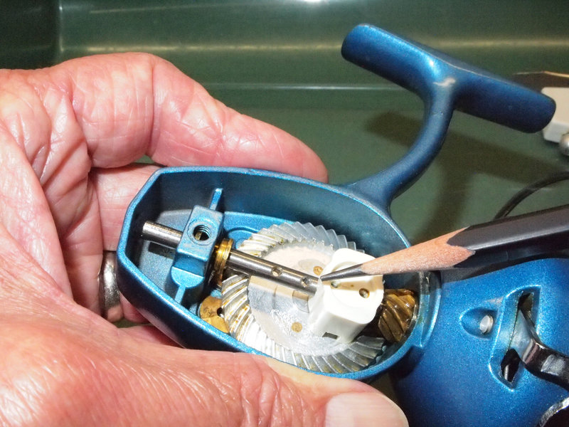
Under a strong light, pull the spool shaft forward until the holes in the shaft line up roughly with the holes in the crosswind block. You will be able to see this with a strong enough light source.
-
Apply a light coating of grease to the crosswind connector and slide it into the holes in the crosswind block, then on into the holes in the spool shaft--this may require a bit of back-and-forth with the spool shaft and working the connector back and forth with your fingertip. A little finesse and patience is required for this move. Either side of the connector should fit in either hole in the block, but if it does not fit easily one way, flip it around and try it the other way. When the connector is fully inserted it will fit flush with the top of the block.
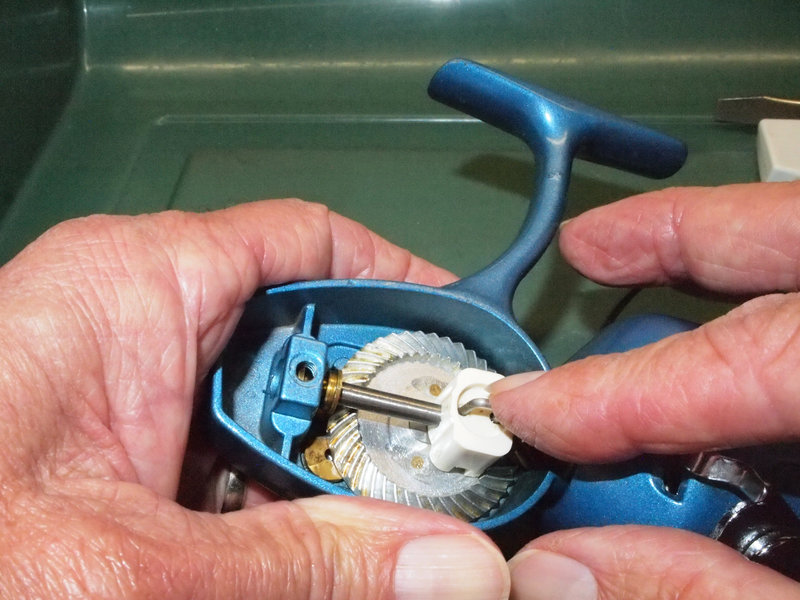
When replacing the dog and spring:
-
Make sure round section of the spring is seated correctly in the round opening in the dog. Apply a light coating of grease to the dog/spring. Flip the eccentric lever toward the back of the housing--you will see the eccentric (the small brass semicircle) rotate so that the flat side is positioned toward the front of the housing. Press the dog/spring onto the center nib at the back of the housing. Make sure the long section of the spring presses against the back of the housing. See the pencil point in the following image. In this position the anti-reverse and clicker are disengaged.
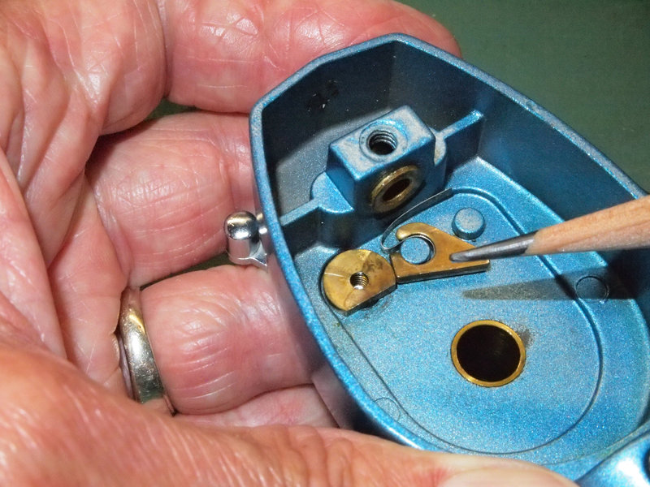
-
Flip the eccentric lever toward the front of the housing. See the pencil point in the following image. The eccentric should rotate so that the flat side turns toward the dog and allows the spring to rotate the dog clockwise--this is the engaged position for the anti-reverse. When in this position the dog engages with the brass teeth on the back side of the main gear to prevent the handle from turning in reverse.
The dog/spring assembly actually serves two functions: When engaged, it not only prevents the handle from turning in reverse, but also serves as the "clicker" when retrieving--the long part of the spring clicks against the back of the housing during retrieve. If the spring does not contact the back of the housing it can be gently bent a little so that it does make contact.

-
After completing the rest of the reel re-assembly make sure the eccentric screw is tight.
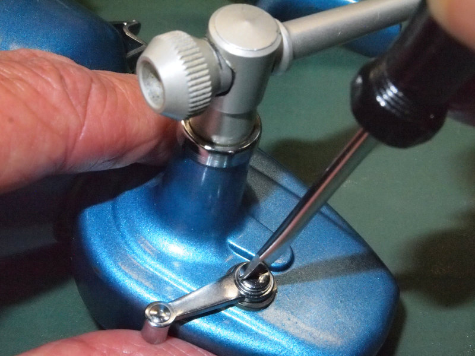
When replacing the main gear: Make sure the thrust washer is in place and that the gear seats all the way so that the back of the gear is flush with the back of the housing. With the anti-reverse disengaged, try turning the gear both clockwise and counter-clockwise; it should spin freely either way. If not, you may need to remove it and inspect the dog/spring assembly to make sure they are still seated properly.
When replacing the pinion gear: the teeth mesh with the teeth on the main gear--give them both a few turns with your fingers to check for smooth operation.
When replacing the rotor cup note that the pinion gear shaft: Note that the hole in the rotor cup, and the rotor cup washer all have flat sides--make sure to align these correctly when fitting them together. Make sure to tighten the nut enough to stay put, but not overly tight--too much pressure can damage any or all of these parts.
When replacing the handle: Before replacing it apply a few drops of reel oil into the handle drive shaft. Remember it screws in counter-clockwise, opposite to most screws (not "rightie-tightie"). Apply a few drops of reel oil to the handle knob screw and at the base of the knob sleeve where it joins the handle arm.
When replacing the housing plate: Make sure it is seated tightly against the housing all around the edges.
When replacing the spool: Apply a few drops of reel oil to the spool shaft behind the click ratchet and at the point where the spool revolves on the shaft. Rotate it clockwise until it clicks and pushes all the way in.

Servicing the Rotor Cup and Bail
The bail relies on a spring to flip it into the retrieve position, and springs can be a bit challenging to re-insert properly after disassembly. So, if the bail seems to be working correctly it may be best to simply apply a few drops of reel oil at both points where the bail pivot on the rotor cup, and on the line roller.
Servicing the Spool and Drag Assembly
This assembly consists of a series of washers stacked into the spool. The drag washers are held in place by a spring, and may not need servicing. If the drag seems to be working correctly it may be best to simply leave it alone.
References
Penn Reel Production Archive.